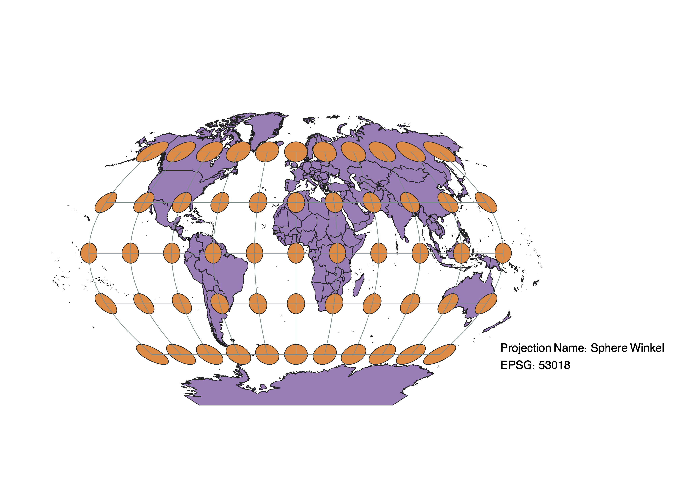

In this project I learned how to display images in different projections
How I used QGIS for this project
For this project, I used QGIS to display maps in different projections. Starting off, I downloaded data provided for on Sakai and unzipped the file. I then dragged the SHP file into QGIS that showed a basic world map. Using the Indicatrix mapper plugin that I had installed, I added a vector layer of circles that shows the distortion of different maps. Then, on QGIS I looked up the EPSGs of different projections to change the look of the map. This allowed me to see how different projections show and distort the Earth. Then, I exported the maps with a label on them that said their projection name and EPSG so that I could add it to this site.
WGS84 Projection
With this map, we see that the circles near the poles are far more distorted, both elongated and larger than the circles near the pole that maintain their shape and size. This tells us that the shape and area of the countries are distorted. It works well for distances thus for purposes of navigation.

Aitoff Projection
This map again distorts as you go closer to the two poles. Everything gets distorted in a way but is balanced to give a compromise between shape, area, distance, and direction.

Pseudo Mercator Projection
This map is similar to the WGS84 map. The distortion occurs mostly at the poles distorting shape and area. This map does a good job of maintaining distancing allowing for its use in navigation.
Robinson Projection
This projection, similar to the Aitoff projection, compromises between shape, area, distance, and directions, distorting each of them. It gives a good compromise between the differences. The distorting is heaviest towards the poles and the equator is the most accurate.

Equal Area Cylindrical Projection
This map preserves areas across the map. However, as you move further from the equator towards the poles, we see a distortion of shape as the circles become more elongated. This map would be used when measuring the area of different countries.
Equidistant Conic Projection
This map maintains the distance between countries but as it evident from the circles, intensely distorts the shape and area of countries near the South Pole flattening the countries and elongating them. This map would probably be used to look at countries in the north or for distances.
Azimuthal Equidist Projection
This map preserves directions and distance from the north pole distorting shape and area as you go towards the south pole.
Bonne Sphere Projection
This map maintains areas of countries throughout the world and helps to maintain the North Pole that is often distorted in map projections. The South Pole gets its shape distorted the most. This map works well for looking at countries in the north.
Cassini Projection
This map distorts shape, area, distance, and direction the further you get from the intersection of the prime meridian and the equator. In the center of the map, we see that area and shape are preserved.
Data used for this project
Download Natrual Earth 1:10m Cultural Vector